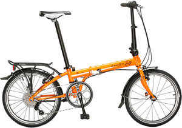

A frequent winner of folding bike shootouts that include bikes that cost up to four times as much, the Mariner is one of our most popular bicycles. It’s a highquality, lightweight bike at a surprisingly affordable price. Its portability makes the Mariner ideal for trips that include a stretch by bus or train – perfect for multi-modal urban transport.
The Espresso D21 is the ideal bike for a busy urban lifestyle. To the park on a sunny weekend, down the street for a social coffee or off to the Italian market, the Espresso is an impressive shot on wheels, wherever your destination.
Ciao D7
This city shopper makes hopping on and hopping off a breeze. Safe and stable with a low center of gravity, it’s the perfect companion for folding bike beginners and those wanting a steadier, easier mount and dismount. Now with seven gears in a Shimano hub, the Ciao D7 is the perfect town and suburban bike

The Speed D7 is a true gem in terms of value and performance, making it a firm favorite in the Dahon lineup. Hand-welded and featuring a fast-shifting Neos derailleur with wide gear range, the Speed is a perfect companion for city riding.